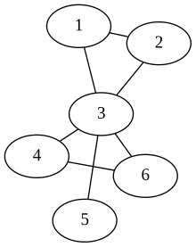

Note
Click here to download the full example code
Subgraph¶
Specify a subgraph in pygraphviz.
Out:
strict graph "" {
subgraph s1 {
graph [rank=same];
4 -- 6;
5;
}
1 -- 2;
1 -- 3;
2 -- 3;
3 -- 4;
3 -- 6;
3 -- 5;
}
import pygraphviz as pgv
A = pgv.AGraph()
# add some edges
A.add_edge(1, 2)
A.add_edge(2, 3)
A.add_edge(1, 3)
A.add_edge(3, 4)
A.add_edge(3, 5)
A.add_edge(3, 6)
A.add_edge(4, 6)
# make a subgraph with rank='same'
B = A.add_subgraph([4, 5, 6], name="s1", rank="same")
B.graph_attr["rank"] = "same"
print(A.string()) # print dot file to standard output
A.draw("subgraph.png", prog="neato")
Total running time of the script: ( 0 minutes 0.040 seconds)